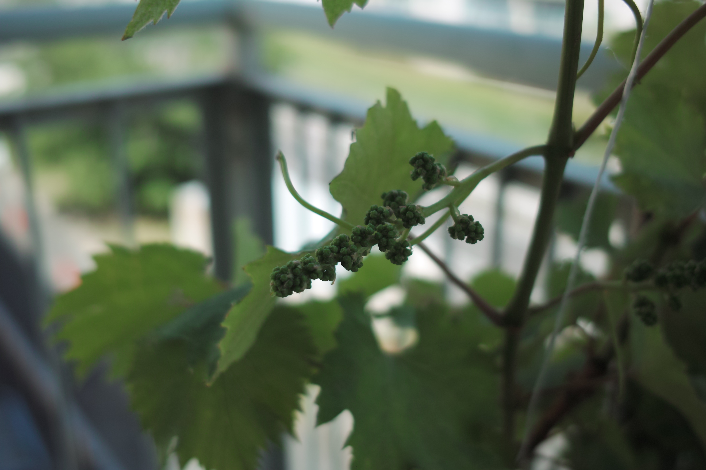
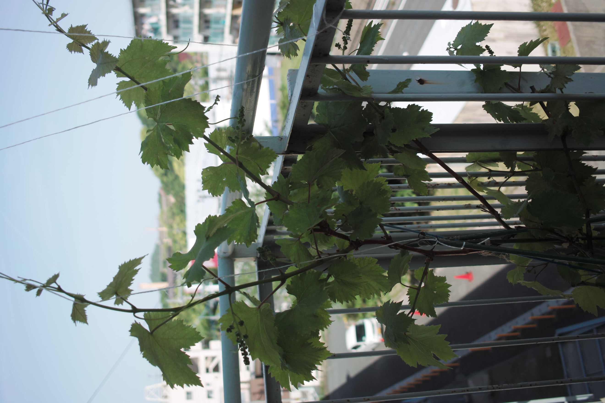

これは何だ？
去年は出てこなかったものが出てきた！
1年は何もなく、2年後から実をつけはじめる、と本に書かれていた。
きっとそのとおりで、これは蕾に違いない。
嬉しい、ただ水をあげただけなのにこんなにも献身的な植物がいるだろうか？
どうなっていくのか非常に楽しみだ。
まずきっと花が咲くのだろう。
どんな花なのか？
まったく想像がつかない。
次に花が落ちてきっと葡萄の実がでてくるのだろう。
品種は巨峰だけれど、販売されている巨峰と同じように美味しかったらどうしよう。
そんなことになったら葡萄にどう感謝してよいかわからない。

